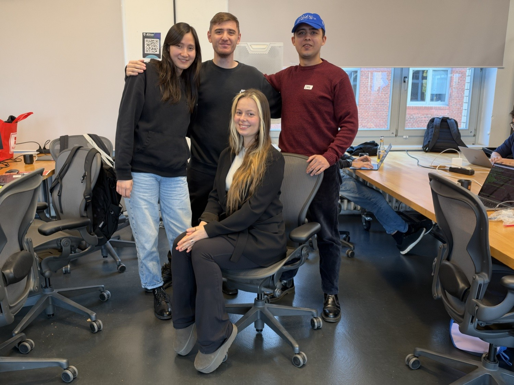

Invented data. No real-wall, GOLD, holdout, accuracy, health, safety or compliance claim.
00:00–00:20 · 20s
Lead with the human team site; this pitch then adds the synthetic reliability loop and stronger evaluations—support, not a replacement.
Open team website Lab Research loop
Human website uses JavaScript and external Google Fonts; exploratory structural-system rankings are not validated recommendations. This pitch stays offline / noJS support.
AI-assisted implementation; agent-derived synthetic expectations, not independent human or scientific validation.

00:20–01:05 · 45s
Explicit modules. Known input change. Detectable fault.
Can this synthetic pipeline keep selected module boundaries and missing data explicit, respond to a known input change, and detect a deliberately injected fault?
01:05–01:45 · 40s
Old-base preservation assertions left immutable. Fix scope: 40 byte paths + 9 deletions + run.py AST; 4 mutation controls rejected—not whole-repo protection. P2 15/15 and HumanNode 14 PASS are saved records. History guards 2/15→15/15 are prior before/after only—not a new measurement here.
Exact20 record Gallery 28/29 Preservation report v1 policy Mutation controls P2 HumanNode
01:45–02:20 · 35s
Negative control
--fault-hook C07-density-x2 → C07 FAIL, harness exit 1. Existing C19 remains.
Saved record—not browser execution. Charts here are static facts from saved outputs.
02:20–02:45 · 25s
Invented data. No real-wall, GOLD, holdout, accuracy, health, safety or compliance claim.
A1–A3 + C1–C4 only. A4/A5/B excluded. D separate. Unknown ≠ 0.
C/D omit layers with unknown A1–A3—not independent completeness.
19/20 and gallery 28/29 stay FAIL. Separate 50-path v1 ≠ whole-repo PASS.
1 PASS / 4 UNKNOWN / 2 NOT RUN. Legacy products.csv missing.
No thermal transmittance calculated; functional equivalence unverified.
Human team report reviewed separately outside this pitch; preexisting inconsistencies there are not imported (no rankings, health, superiority, Monte Carlo or engineering guidance).
02:45–03:00 · 15s
Adjudicate real sources and intended policies before any decision support.
This page shows saved outputs. Regeneration needs Python 3 in a terminal—not the browser.
Appendix · detail, not pitch timing
python3 demo/run_demo.py
python3 demo/run_demo.py --input demo/input/synthetic_wall_replaced.json --out demo/output/replaced
python3 demo/run_gallery.py
py -3 demo/run_demo.py
py -3 demo/run_demo.py --input demo/input/synthetic_wall_replaced.json --out demo/output/replaced
py -3 demo/run_gallery.pypython3 demo/run_demo.py --input my_wall.json --out demo/output/mine --no-expected
# or: py -3 …--no-expected has no oracle. Full suite/preservation replay needs the original Git checkout.
| Quantity | 100 mm | 160 mm |
|---|---|---|
| A1–A3 | 185 | 230 |
| C1–C4 known | 21.2 | 30.2 |
| A1–A3 + C1–C4 | 206.2 | 260.2 |
| D separate | −2; incomplete | −2; incomplete |
| Known mass | 150 kg; incomplete | 180 kg; incomplete |
Layer CSV Replacement report Expected 185 Expected 230 Fault details Candidate hashes 200 / 25 demo gallery
200 records / 25 assemblies = demonstration, not 200 evaluations. Default/replacement/gallery generation exit 0 (saved).